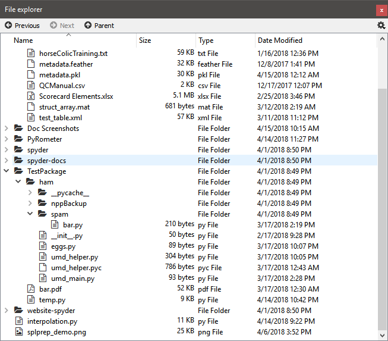

File Explorer¶
The File Explorer pane is a built-in filesystem and directory browser allowing you to view and filter files and their properties, open them with the Editor or an external tool, and perform common management tasks (varies by platform).
Performing file operations¶
You can use context menus to access a number of functions on a per-file and per-directory basis, including running scripts, creating, renaming, moving, editing or deleting files, performing basic operations with git, and (on Windows) opening an external file explorer.